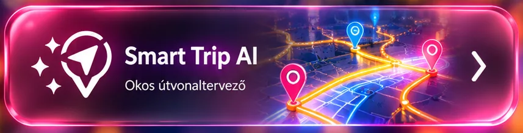

LÉNA · SAJÁT ÚTVONALTERVEZŐ
Smart Trip AI
Saját útvonalajánlás · BKK és Volán integráció készülGépelés közben saját javaslatok jelennek meg. A térkép a meglévő Family Guard térkép, csak kifejezett koppintásra nyílik meg.
✨ Léna útvonaljavaslataiMenetrendi adat ellenőrzése kereséskor
Válassz ki két helyet, vagy írj be állomásneveket. A keresés nem nyit meg idegen szolgáltatói oldalt.